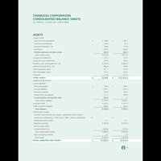
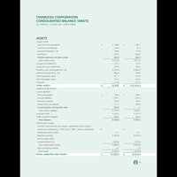

At a young age, I discovered a strong interest in papers, pencils and pens. This interest quickly developed into a love for the arts. I spent most of my young life drawing as much as I could, and learned that art provided me a level of enjoyment I couldn’t find elsewhere. As I grew older my interests migrated towards technology, and I found myself spending time navigating this new online world. Eventually I found myself with an Associate’s degree in art studies, it was at that point that I realized that I wanted to do more than just study the arts. I wanted to create using the technology that enticed me as a child. Graphic design was the perfect combination of the arts and technology, and in 2015 I began my journey towards becoming a designer. I enrolled at my local community college with the goal of a second Associate’s degree. I graduated in 2017 with several academic awards, and am now pursuing a Bachelor’s of Fine Arts at Montserrat College of Art.
The “Type Specimen” assignment required students to create a booklet 4.2”x7” with specific interior margins set at 2p0 for the outside and top, 3p0 for the inside, and 5p0 for the bottom. A total of six typefaces, each of a different style of type, the second requirement. Each typeface would have three pages in total, the first showcasing the characters within the typeface, the second showing a minimum of two paragraphs in justified format, and the third showing those same paragraphs in a ‘rag’ right format. The type being shown on both pages of paragraphs was to be set at the same point size. This booklet was required to also contain a cover/back–cover, title page, and table of contents.


The ‘Poetry Booklet’ assignment provided an article titled “Lingodroids: Studies in Spatial Cognition and Language,” and required that I compose six different and unique poems about the article while only using words found within the article. The poems were then to be set, in a booklet without size requirements, in a non-conventional manner. The goal being that the typography would influence, and hopefully enhance the reading of, and meaning of the poems. The booklet was required to contain a cover/back–cover, title page, and table of contents.


The Architecture and Alphabet assignment required that I choose any architect considered modern, and create either a poster, or booklet showcasing the architects work. If the choice was a poster then it could be as simple as an event relating to one of that architects building, but if it was a booklet then it should incorporate more information. The designs of the poster or booklet should relate directly to that architects own unique style in a way that also shows how the alphabet is incorporated into architectural forms.
As a class we were instructed to choose a book that we have recently read. Preferably one that did not contain images. After we chose a book we were then asked to design three different book covers for that specific book, while relating the covers to the narrative. These were my solutions

I was instructed to choose a company and create a short version of an annual report for them. For this project I chose Starbucks as my company, and using the information for the 2016 Annual Report, designed this one from my own ideas.


 



I was given the choice between 5 different businesses that were already in existence but had branding that was not up to date with 2017. I was asked to do a re-design of the businesses logo. After that was taken care of I was asked to create two different levels of letterheads. After that I was asked to create a standards manual explaining how to properly use the new logo in multiple different forms of branding

Cabot Street Books & Cards asked me to do a quick freelance event poster for them pro-bono. I came up with two solutions for them, a conservative two column version, and a more designed one column.
Eight65 Boutique was my first freelance client, and remains a loyal client for me today. The business uses me for a number of different things such as re-touching photographs, prepping images for web display, but most notably for their logo. This is the logo they currently use shown in the different stages that it has been through.

Beyond the normal duties of a work study with Montserrat College of Art's gallery staff, I was given the opportunity to create two event posters. The goal was to compose an eye catching informational poster that would draw a crowd to the event. These are the solutions I came up with for the the gallery